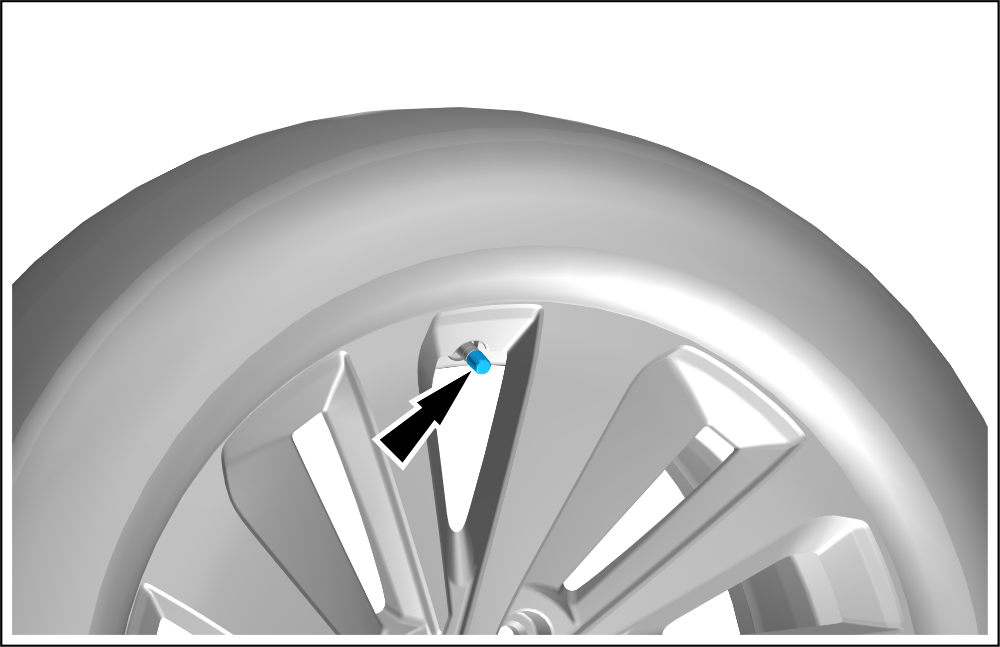
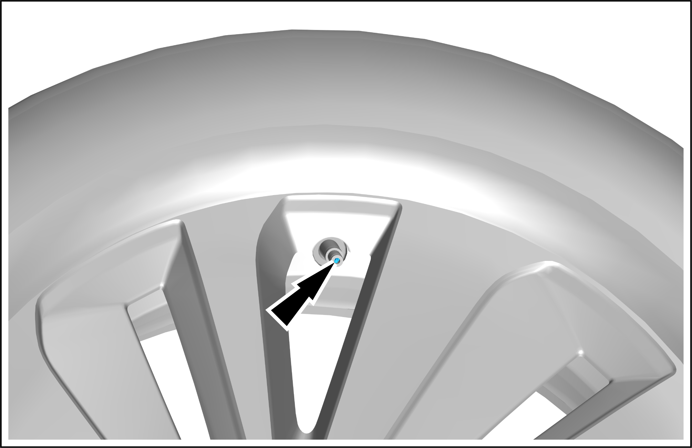
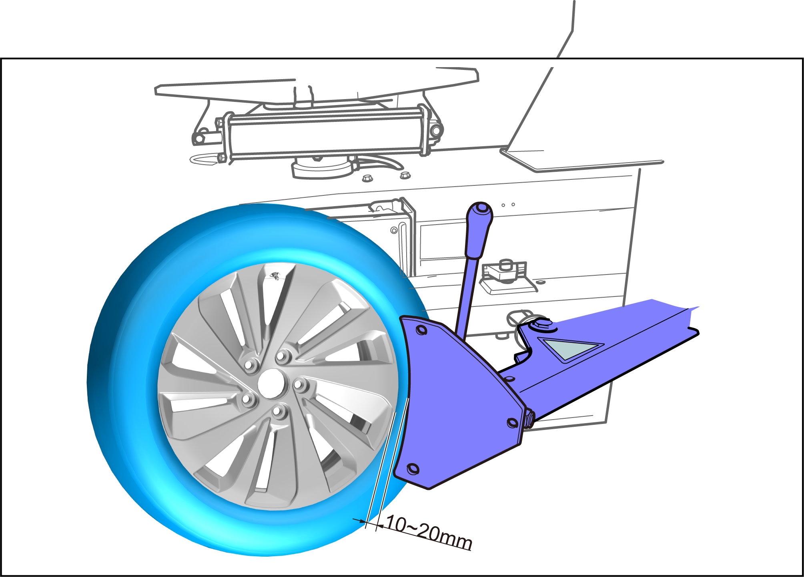
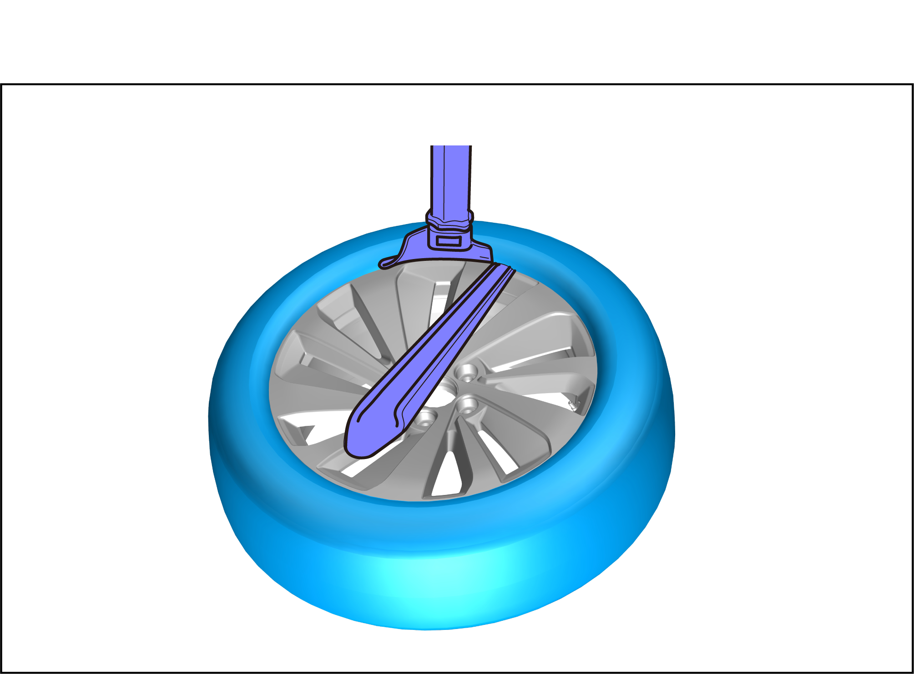

Radial Tire - Removal and Installation

Removal
-
Remove the left front wheel assembly. See Wheel Assembly - Removal and Installation
-
Remove the valve cap.

-
Loosen the valve core with the valve core wrench to release the tire pressure, and after the tire pressure is completely released, unscrew the valve core.

-
Place the wheel assembly on the tire changer, adjust the gap between the rim flange and the separation shovel to be 10~20mm, and press the pedal to separate the tire from the rim.
Caution
-
When the tire changer is used, place the tire vertically to prevent the rim from being damaged by the separation shovel.
-
Keep the tool away from the valve position when removing or installing the tire, so as to avoid damaging the valve and tire pressure monitoring module.
-
Separate the tire from the rim at different positions by 2~3 times.

-
-
Press the other side of the tire out of the rim in the same way.
-
Fix the tire on the work bench and adjust its position.
-
Press down the lifting lever to make the removal head contact the rim flange.
Caution-
Note the distance between the removal head and the rim to avoid damaging the rim surface.
-
Keep the tool away from the valve position, so as to avoid damaging the valve and tire pressure monitoring module.
-
-
Pry up the upper flange of the tire to the top of the removal head with a tire crow bar, and depress the rotary switch to separate one side of the tire from the rim.
Caution-
Fix the rim firmly and start the tool after inspection.
-
Never separate the tire by hand when the tool is rotating.
-
Never damage the bead, so as to avoid tire leakage.

-
-
Carry up the tire with the tire inclined upwards, pry the lower flange of the tire to the top of the removal head with a tire crow bar, and depress the rotary switch to completely separate the tire from the rim completely.
-
Take out the radial tire.
Installation
-
Follow the removal steps in reverse order to install.